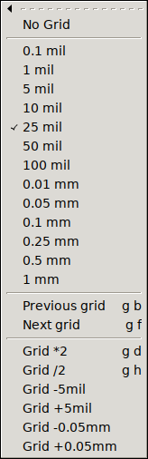

The same default menu file is used in all GUI HIDs. It comes with multi-stroke key bindings, plus only a very few, alternative keys that use modifiers (mostly ctrl). A multi-stroke key binding requires the user to type in a sequence of keys, e.g. pressing 't' and 'l' (written as {t l} in this document) will make pcb-rnd switch to the line tool. There are two major advanatges of using multi-stroke instead of modifiers:
Most multi-stroke keys, especially the commonly used ones, use two strokes. Some rarely used feature will require three. The system can be regarded as a tree: e.g. in a 3-key sequence, starting from the root (nothing is pressed) the first key select a chapter, the second key narrows it down to a subchapter and the third key (leaf) selects the actual action within the subchapter. The current key tree is accessible in a large svg drawing or in a script-digestable flat list.
The grid is an imaginary set of points over the drawing. The crosshair can snap to the grid, helping the user to keep coordinates of objects distributed evenly.
The only grid geometr pcb-rnd supports is a regular, rectangular grid, that is: grid points spaced evenly in x and y directions, aligned into horizontal and vertical rows. The grid also has an optional offset in x and y directions (which is usually set to 0;0).
The grid spacing (distance between grid points) is user configurable. There are two methods managing the grid.
The configuration system has a node called editor/grids, which is an ordered list of preset grid settings. This list should contain the grid settings preferred by the user, or preferred for the given design. Since this is a configuration item, the usual conf rules apply (e.g. local grid config can be saved in the project's config or even in the board file).
While drawing, the user can use the {g b} and {g f} hotkeys, or the shorter [ and ] keys to step the current grid, selecting the previous or next item from the list. The grid sizes menu will always have the currently selected item checked.

If the user changes grid properties directly, the new grid setup will most likely not match any of the presets and the check mark is gone from the menu. However, pcb-rnd remember the last used preset menu and upon the next stepping it will move from the last selected preset grid.
The format for the grid configuration is a simple text that lists an optional grid name, the mandatory grid size, the optional offset and optionally instructs pcb-rnd to also switch units when the grid is activated. The full syntax, optional parts written in [] is:
[name:]size[@offs][!unit]
(The optional name has no functionality other than being displayed, helping the user to remember the purpose of the grid.)
Examples:
| grid spec | description |
|---|---|
10 mil | anonymous 10 mil grid with no offset |
1.5 mm | anonymous 1.5 mm grid with no offset |
20 mil@1mil;-3mil | 20 mil grid with a horizontal offset of +1 mil and vertical offset of -3 mil |
1.5 mm!mm | 1.5 mm grid; when activated, switch untis to mm |
placing dips:100 mil | named grid |
leds:1mm@0.5mm;-0.1mm!mm | all the above features, combined |
The current grid is stored as grid distance and x;y offset. Regardless of the configured presets, these properties of the current grid can be changed any time, using the SetValue() action or using the menu.
{kind=link}